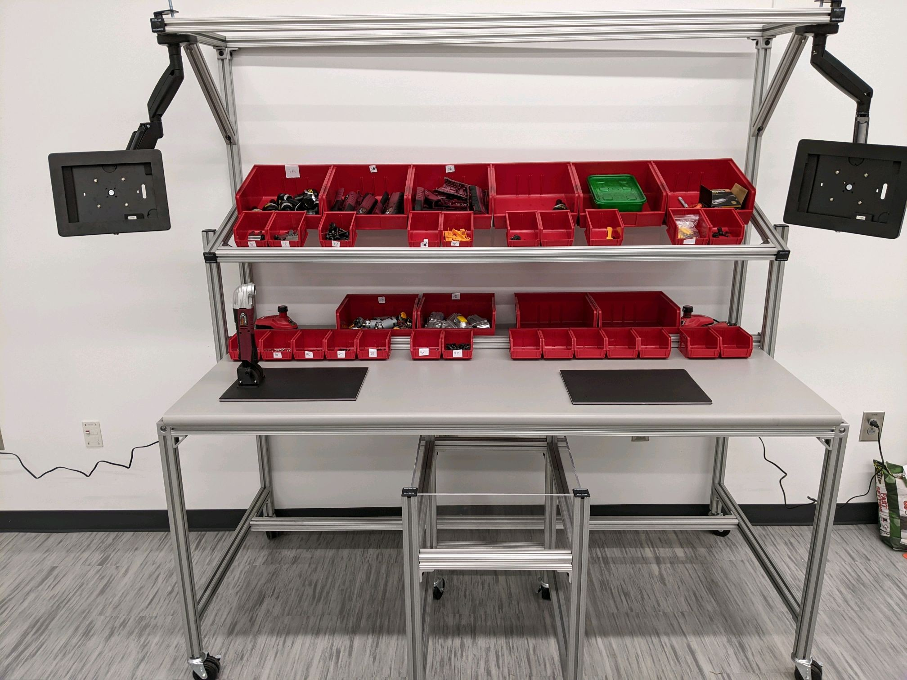

 This project was for the UGA's Innovation Factory, a production facility that provides a unique learning environment for students of various engineering majors by solving real industry challenges while learning skills transferable to the workplace. The current production line consists of an assembly line for a multifunction power tool but lacks a disassembly procedure to complete a manufacturing loop. Our team was asked to build a realistically equipped disassembly station for an oscillating multi-tool. The station must be ergonomically designed for two people. It must be fast, efficient, and contain a sufficient sorting system for disassembled parts. To accomplish this, our team had to identify needed disassembly tools and fixtures, restructure and display disassembly instructions, and create an efficient sorting system. Our three main focuses were tool mounts, part placement assurance, and user interface. The tool mount was built by measuring the battery cavity and creating a mold the tool can be attached to. We analyzed the disassembly steps to decide the optimal position of the tool for each step. The mount can be rotated by the user to display the tool at an angle that corresponds to the current step/phase of disassembly. For the disassembly station we wanted to develop a solution to avoid errors and keep the user working quickly by being accurate and efficient. To do this we focused on finding a way to ensure the user puts the correct parts into the correct bins. To guarantee the part placement was correct we have implemented weight sensors (pictured in Figure A) that will detect, using a python code, if a part was placed into the incorrect bin. If this happens the user will be alerted and notified on how to correct this mistake quickly. The user interface is displayed on a tablet mounted to the table. Using PyQt5, a python based UI solution, we created a simple and easy to follow process to guide the user through the disassembly steps quickly and efficiently. We broke the disassembly process into four phases, each containing steps to disassemble the tool. The user interface will display one phase at a time to the user and wait for the button to be pressed by the user to continue to the next step. This abstract was extracted from here. See video below.

{kind=link}